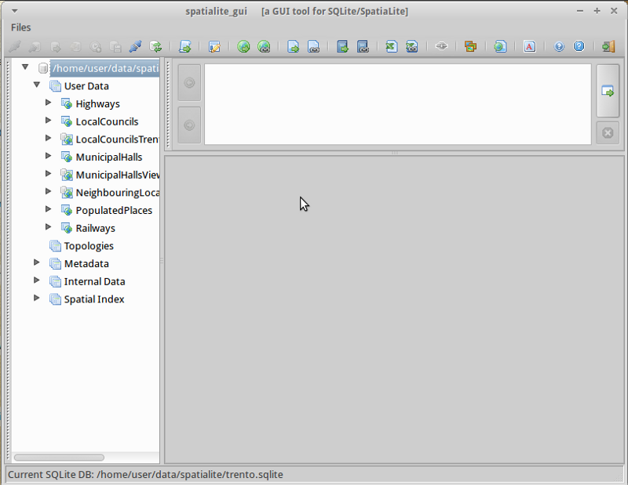
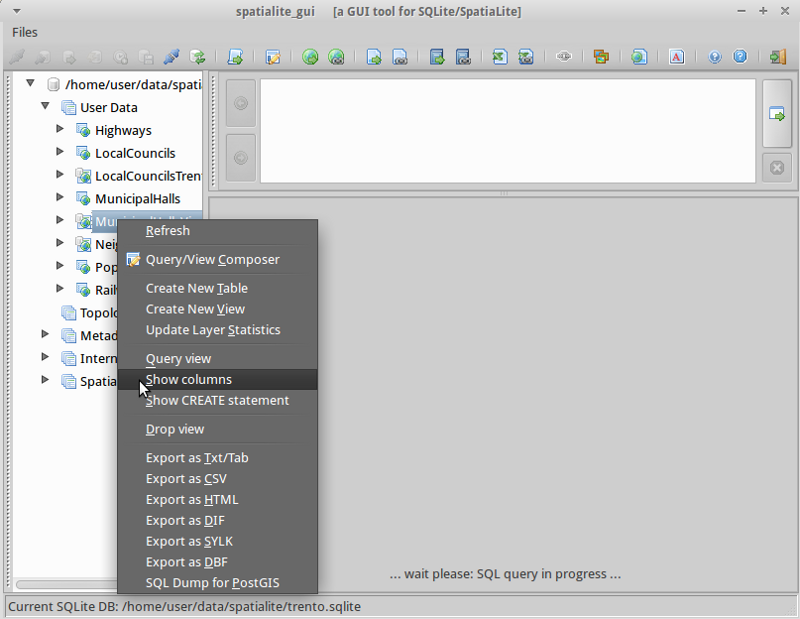
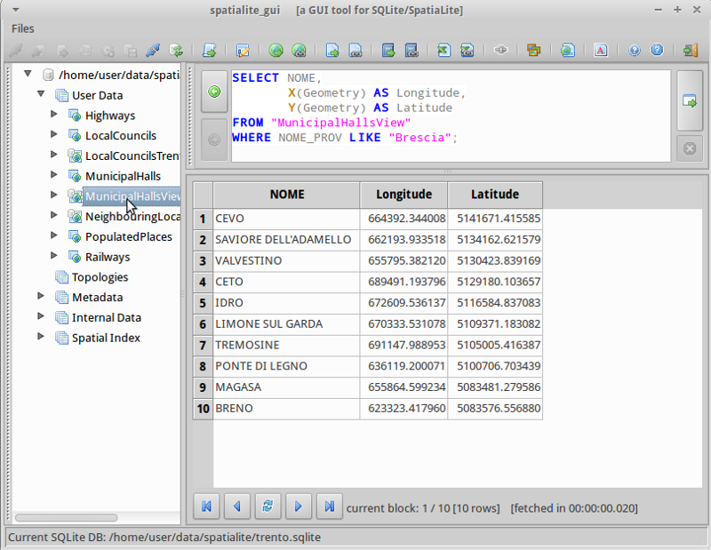

SpatiaLite gyorstalpaló¶
A SpatiLite egy SQLite adatbázis motor hozzáadott térbeli függvényekkel.
Az SQLite egy egyszerű, robusztus, könnyen használható és könnyűsúlyú adatbázis kezelő rendszer (RDBMS). Minden SQLite adatbázis egyszerűen egy fájl. Szabadon másolhatja, tömörítheti átviheti Windows, Linux, MacOs, stb. között.
Ez a gyorstalpaló leírja,hogyan nyithatunk meg egy spatialite adatbázist a grafikus felületről és a parancssorból. Néhány SQL lekérdezést is bemutatunk.
Contents
Spatialite elindítása és egy adatbázis betöltése¶
Spatialite-gui egy grafikus felületet biztosít egy spatialite adatbázis megtekintéséhez és karbantartásához. Könnyen megnézheti az adattáblák szerkezetét és tartalmát egérműveletekkel, melyek közül sok SQL lekérdezést hoz létre vagy készítse el saját SQL lekérdezéseit.
Nyissa meg a Spatialite grafikus felületét a kiválasztásával
Válassza a menüből
Tallózzon a
/home/user/data/spatialitekönyvtárba és válassza atrento.sqlitefájlt.Jobb kattintás a MunicipalHallsView táblán és válassza a „Show Columns” opciót
Megfigyelheti, hogy a képernyő három részre bomlik:
- A baloldali panel az adatbázis hierarchiát jeleníti meg, mint a táblák listája és oszlopok a táblában. Jobb gombbal kattintson egy elemre a baloldali panelben az általános adatbázis műveletek listájához.
- A jobb-felső panel a kiválasztott művelethez tartozó SQL-t mutatja. Beviheti a saját testreszabott SQL utasítását ebbe a panelbe.
- A jobb-alsó panel az SQL lekérdezés eredményét mutatja.
Jobb kattintás a MunicipalHalls táblán és válassza az „Edit table rows”-t. Vegye észre az SQL lekérdezést, melyet a program létrehozott a jobb-felső panelben és az eredményeket a jobb-alsóban:
SELECT ROWID, "PK_UID", "AREA", "PERIMETER", "COMU", "Geometry" FROM "MunicipalHalls" ORDER BY ROWID
{kind=link}
{kind=link}
SQL lekérdezés futtatása¶
Most csavarjunk egyet az SQL mondatunkon, hogy a NOME és (hosszúság, szélesség) adatokat kapjuk csak akkor, ha a NOME_PROV mező tartalmazza a „BRESCIA”-t, most a MunicipalHallsView-t használva. A jobb-felső SQL panelba írja be:
SELECT NOME, X(Geometry) AS Longitude, Y(Geometry) AS Latitude FROM "MunicipalHallsView" WHERE NOME_PROV LIKE "BRESCIA";
Kattintson az „Execute SQL” gombra a jobb oldalon és az eredményt jobb alsó részen láthatja.

{kind=link}
Spatialite futtatása a parancssorból¶
Azok a felhasználók,akiknek szkriptekre vagy a lekérdezések automatizálására van szüksége, felismerhetik a parancs sori interfész előnyeit a spatilite-vel való munkában. Ebben a példában betöltünk egy shape fájlt és a 42-es autópálya közelében lévő iskolákat keresi ki.
Before working from the command line, we need to open a terminal window: .
A következők beírásával nyissa meg a minta adatbázis a spatialitte-tal:
spatialite /home/user/data/spatialite/trento.sqlite
Hasznos parancsok a parancssorból:
.help .tables .quit
Új spatialite adatbázis létrehozása és shape fájl betöltése¶
Hozzunk létre egy új, üres spatialite adatbázist és töltsünk be két shape fájlt a north_carolina adatokból:
user@osgeo-6:~$ spatialite test.sqlite SpatiaLite version ..: 3.1.0-RC2 Supported Extensions: - 'VirtualShape' [direct Shapefile access] - 'VirtualDbf' [direct DBF access] - 'VirtualXL' [direct XLS access] - 'VirtualText' [direct CSV/TXT access] - 'VirtualNetwork' [Dijkstra shortest path] - 'RTree' [Spatial Index - R*Tree] - 'MbrCache' [Spatial Index - MBR cache] - 'VirtualSpatialIndex' [R*Tree metahandler] - 'VirtualFDO' [FDO-OGR interoperability] - 'SpatiaLite' [Spatial SQL - OGC] PROJ.4 version ......: Rel. 4.8.0, 6 March 2012 GEOS version ........: 3.3.3-CAPI-1.7.4 SQLite version ......: 3.7.9 Enter ".help" for instructions spatialite> spatialite> .loadshp data/north_carolina/shape/schools_wake schools utf-8 3358 spatialite> .loadshp data/north_carolina/shape/roadsmajor roads utf-8 3358Figyelje meg a .loadshp parancsot: először a shape fájl az .shp kiterjesztés nélkül, utána az új spatialite tábla neve, majd a karakter kódolás és végül a shape fájl referencia rendszerének az EPSG kódja.
Most lekérdezzük az iskolákat a 42-es autópálya közelében:
spatialite> SELECT s.NAMESHORT, s.ADDRNUMBER, s.ADDRROOT ...> FROM schools AS s, roads AS r ...> WHERE r.ROAD_NAME = "NC-42" AND ...> ST_Distance(s.Geometry, r.Geometry) < 1000; FUQUAY-VARINA|6600|Johnson Pond Rd WILLOW SPRINGS|6800|Dwight Rowland Rd FUQUAY-VARINA|109|N Ennis St LINCOLN HEIGHTS|307|Bridge St
Végül írjuk ki a lekérdezés eredményét a következő paranccsal egy „vesszővel elválasztott értékek” szöveg fájlba „schools_rt42.txt”:
spatialite> .mode csv spatialite> .output "schools_rt42.txt" spatialite> SELECT s.NAMESHORT, s.ADDRNUMBER, s.ADDRROOT ...> FROM schools AS s, roads AS r ...> WHERE r.ROAD_NAME = "NC-42" AND ...> ST_Distance(s.Geometry, r.Geometry) < 1000; spatialite>.q
Kipróbálandó dolgok¶
Íme néhány további kihívás kipróbálásra:
- Vizsgáljuk meg a geometriákat a spatialite-GUI-val
- Nyissa meg és szerkessze a Spatialite rétegeket QGIS-ben
Mi a következő?¶
A SpatiaLite projekt lap egy jó kiinduló pont a Statilalite további tanulásához
Feltétlenül látogassa meg a Spatialite cookbook oktatóanyagot.